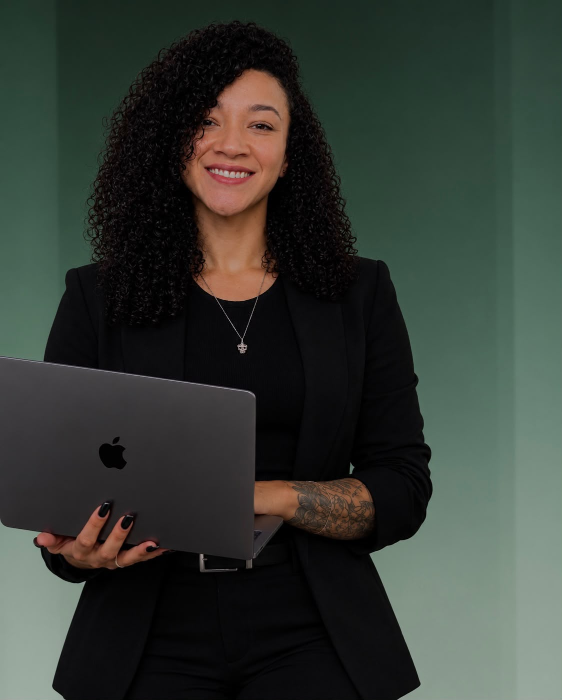

Educação Física
Bacharelado em andamento · Anhembi Morumbi
Início em 2023 · 7º semestre
Um acompanhamento nutricional que considera sua rotina, seus objetivos e a sua história.
Conversar pelo WhatsApp ↗ Conheça meu trabalho
O universo fitness faz parte da minha vida há muitos anos. O que começou como uma paixão pela academia se tornou um estilo de vida e, mais tarde, também a profissão que escolhi seguir.
Ao longo dessa trajetória, vivi diferentes fases com meu próprio corpo e tive a oportunidade de realizar um dos desafios mais marcantes da minha jornada: me preparar e competir no fisiculturismo. Foi uma experiência que me aproximou ainda mais da realidade do esporte e de tudo o que envolve a busca por evolução física.
Hoje, como nutricionista clínica e esportiva, encontrei na Nutrição uma forma de unir duas coisas que fazem parte de quem sou: o cuidado com a saúde e a paixão pelo treinamento.
Atendo pessoas com objetivos diferentes, desde quem está começando na academia e quer mudar seus hábitos até quem busca ganhar massa muscular, perder gordura ou melhorar sua performance.
Meu olhar para cada paciente vai além do que está escrito em um plano alimentar. Quero entender sua rotina, suas dificuldades e seus objetivos para construir uma estratégia que faça sentido na prática, sem esquecer que cada pessoa tem seu próprio ritmo e sua própria história.
Afinal, eu também faço parte desse universo. Conheço a dedicação que o treinamento exige e valorizo o processo que existe por trás de cada conquista. Hoje, poder unir essa vivência à minha profissão é o que torna meu trabalho tão significativo.
Nutrição, treinamento e saúde: três partes de uma paixão que se transformou em propósito.
Nutricionista Clínica e Esportiva | CRN-3 73002
Bacharelado em andamento · Anhembi Morumbi
Início em 2023 · 7º semestre
Ensino superior · Universidade Paulista (UNIP),
Bauru–SP
Janeiro de 2016 a maio de 2021
Ensino técnico · Instituto Ana Nery
Setembro de 2015
E.E. Prof. Christino Cabral
Fevereiro de 2006 a dezembro de 2014
Nutricionista
Janeiro de 2022 – Atual
Estagiária de Educação Física
02/09/2026 – Atual
Nutricionista
10/12/2025 a 28/07/2026
Estagiária de Educação Física
01/10/2025 a 04/12/2025
Estagiária de Educação Física
20/01/2025 a 04/04/2025
Recepcionista
21/08/2023 a 21/09/2024
Nutricionista
06/11/2023 a 10/09/2024
Recepcionista e Coordenadora
20/06/2022 a 10/08/2023
Técnica em Nutrição e Dietética
Abril de 2017 a janeiro de 2022
Estratégias alimentares alinhadas à sua rotina de treinos e aos seus objetivos.
Orientação individualizada para construir hábitos alimentares que façam sentido para você.
Acompanhamento para quem busca cuidar da alimentação, da saúde e da performance.
O acompanhamento começa conhecendo seus hábitos, suas preferências e seus objetivos. A partir disso, a estratégia é construída para a sua realidade e acompanhada ao longo do processo.
Entre em contato para conhecer as opções de acompanhamento, valores e disponibilidade.
Quero saber mais ↗Entre em contato ou acompanhe meu trabalho nas redes sociais.